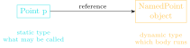

Definition
Polymorphism in general is the ability of one piece of code to work on values of different types. In object-oriented languages it is subtype polymorphism:
- a variable, parameter or array element of type
 can hold an object of any subtype of ;
can hold an object of any subtype of ; - its static type is , fixed by the declaration and used by the compiler to check calls;
- its dynamic type is the class of the object it refers to at run time;
- a call
x.m()is dynamically bound (late binding): the body executed is the one of the dynamic type.
Java binds every instance method dynamically, except static, private, final methods and constructors. C++ binds dynamically only virtual methods called through a pointer or a reference (see virtual functions).
Example
Point p = new NamedPoint(1, 2, "A"); // static type Point, dynamic type NamedPoint
p.print(); // NamedPoint.print(): decided at run time
p.getName(); // compile error: Point has no getNamePicture

Why it matters
Code written once against a supertype keeps working, unchanged, on subtypes written later: the open/closed principle. Together with inheritance it lets one choose the most suitable view of an object and keep a class open to extension.
Intuition
The compiler checks the label on the box; the run time looks inside.
Pitfall
Fields are not polymorphic: a field redeclared in a subclass hides the superclass one, and p.x reads the field of the static type.